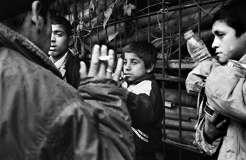

Biz Tehlike Değiliz -- Tehlikeledeyiz
Ekle'ye tıklayın ve ardından farklı galerilerden eklemek istediğiniz öğeleri seçin. Temalar ve stiller de belgenizin düzenli kalmasına yardımcı olur. Tasarım'a tıklayıp yeni bir Tema seçtiğinizde, resimler, grafikler ve SmartArt grafikleri, yeni temanızla eşleşecek şekilde değiştirilir. Stilleri uyguladığınızda, başlıklarınız yeni tema ile eşleşecek şekilde değiştirilir. Word'de ihtiyaç duyduğunuz yerlerde görüntülenen yeni düğmeler sayesinde zaman kazanın. Bir resmin belgenize sığma şeklini değiştirmek için resme tıklayın